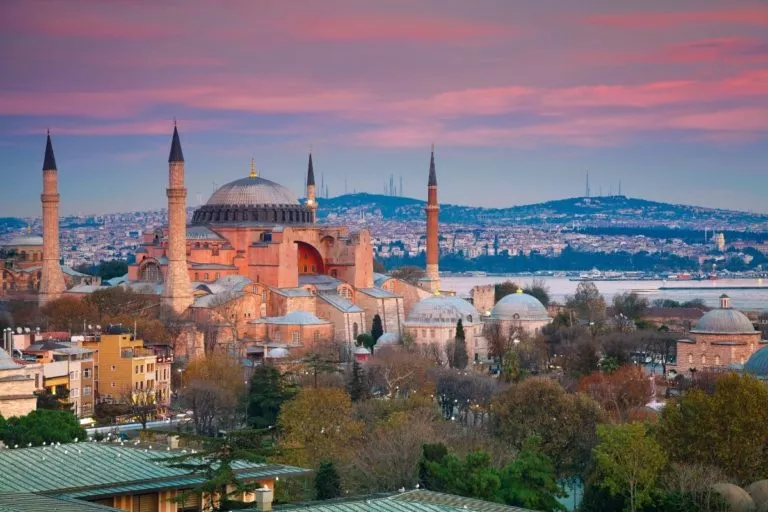
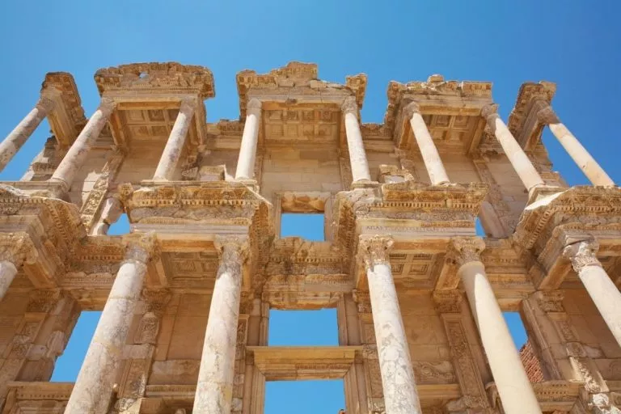
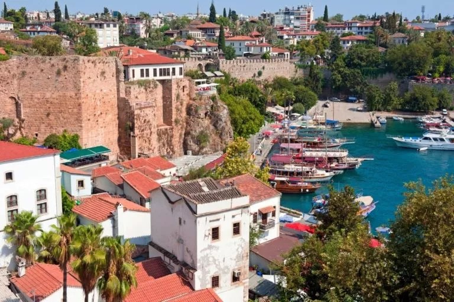
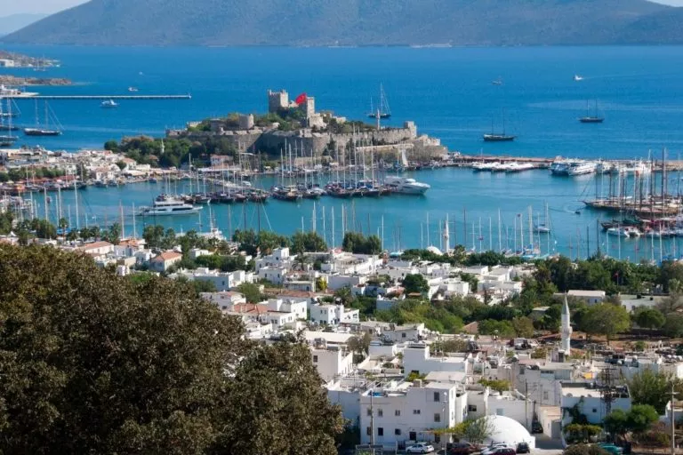
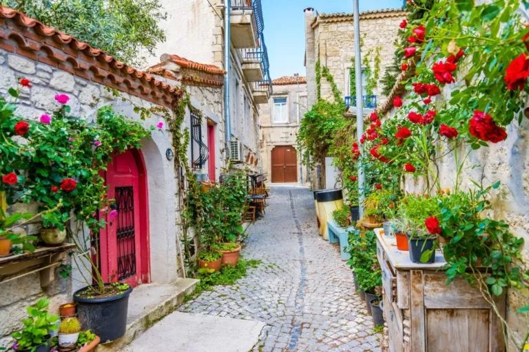
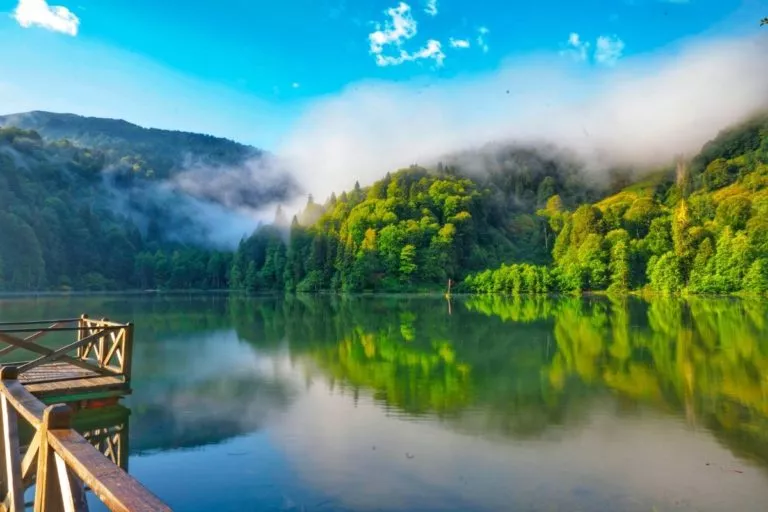
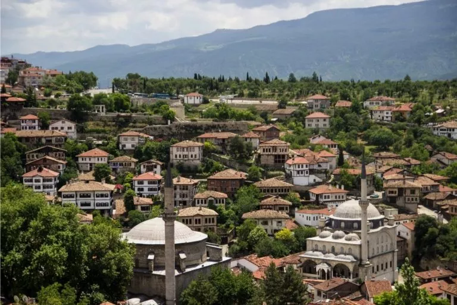

Pontos Turísticos
A Turquia é um país onde o passado e o presente caminham lado a lado, revelando paisagens que parecem saídas de sonhos. Dos antigos templos de Éfeso às mesquitas imponentes de Istambul, das formações rochosas mágicas da Capadócia às águas azul-turquesa de Antalya, cada região carrega uma história própria e um encanto único. Explorar seus pontos turísticos é viajar por diferentes civilizações, sabores e culturas, descobrindo um destino que fascina tanto pela beleza natural quanto pela riqueza histórica e espiritual.
12 LUGARES INCRÍVEIS PARA CONHECER NA TURQUIA
1. Istambul

Símbolo da ligação entre Europa e Ásia, Istambul é a maior e mais importante cidade da Turquia. No passado seu nome era Constantinopla, a capital do Império Bizantino que, em 1453, foi tomada pelos Otomanos, tornando-se a sede do governo dos sultões. A importância secular de Istambul para a história mundial é visível pelas dezenas de monumentos espalhados pela cidade, sobretudo no centro antigo, onde estão atrações imperdíveis como a Hagia Sophia e o Palácio Topkapi. Para além da história, Istambul é uma cidade vibrante que abriga manifestações culturais diversas, vida noturna agitada e um cenário gastronômico especial.
2. Capadócia
Talvez o destino turístico turco mais famoso, a Capadócia é, na verdade, uma região posicionada no centro do país. Várias cidades a compõem, sendo Göreme a mais turística delas. E não é difícil entender por que o destino é tão cobiçado: aqui você encontra paisagens fora do comum e história milenar. A região é habitada desde 1.800 a.C. Os povos antigos aproveitaram a característica peculiar do terreno para cavar túneis e morar em cavernas. Em IV d.C, os católicos fugidos da perseguição romana chegaram e encontraram proteção nessas cidades subterrâneas. Em meio a um cenário que lembra os contos de fadas, na Capadócia você desbrava algumas das igrejas católicas mais antigas do mundo, cravadas na pedra. Além disso, também explora cidades subterrâneas que comportavam até 20 mil pessoas e, por que não, passeia de balão.
3. Pamukkale
No sudoeste da Turquia, Pamukkale reúne terraços de calcário branco com piscinas naturais de águas termais e está entre os lugares mais incríveis que você pode conhecer na Turquia. E olha que isso não é de hoje! Ainda no século II a.C, a região abrigou a cidade grega de Hierápolis, construída para o lazer dos povos antigos.Inclusive, o passeio completo a Pamukkale, que em turco significa “Castelo de Algodão”, vai além de nadar nas piscinas quentinhas – e aqui vale destacar que apenas algumas delas estão liberadas para o banho. Suba até o topo da colina e desbrave as ruínas dessa cidade antiga.
4. Éfeso

A cidade antiga de Éfeso é um dos sítios arqueológicos mais bem preservados do mundo. Construída no século X a.C, foi no século I a.C que Éfeso conquistou seu auge e chegou ao posto de uma das maiores e mais importantes cidades do Império Romano.Sua importância é visível pela grandiosidade dos seus monumentos. O Templo de Ártemis, por exemplo, foi o maior templo do mundo antigo. A Biblioteca de Celso, com dois andares, está entre as maiores do período. Sem falar nas casas geminadas do sítio arqueológico, que eram as moradias dos endinheirados de Éfeso.A melhor base para visitar o sítio arqueológico é Selçuk, que também viabiliza um passeio pela charmosa Şirince. Localizada no alto de uma colina, essa pequena vila agrícola secular abrigava famílias cristãs durante o Império Otomano. Você encontrará monumentos históricos, lindas vistas e ruelas deliciosas para desbravar sem rumo.
5. Antália

Outro destaque entre os lugares para conhecer na Turquia é Antália, a principal cidade turca banhada pelo mar Mediterrâneo. É o lugar perfeito para quem procura o equilíbrio entre praia, história e a estrutura urbana. O centro histórico fica entre as muralhas e foi um importante porto na antiguidade. Edifícios romanos, bizantinos e otomanos bem preservados ocupam suas charmosas e labirínticas ruas estreitas. Dentre as praias azul-turquesa de Antália, Konyaalti se destaca pela excelente infraestrutura turística. Outro atrativo natural é a Catarata de Duden, formada pelas águas do rio de mesmo nome que caem do alto de uma falésia e deságuam no mar.
6. Bodrum

Localizada em uma península banhada pelo mar Egeu, Bodrum é um cobiçado destino de veraneio turco. Suas casinhas brancas com flores nas janelas e o mar azul cristalino calminho dão a Bodrum o apelido de “Santorini da Turquia”. O local que abrigou, na antiguidade, a cidade de Halicarnasso, tem também atrativos históricos. O Mausoléu de Halicarnasso é uma das sete maravilhas do mundo antigo e suas ruínas podem ser visitadas. A elegante orla e as ruelas de Bodrum são tomadas por cafés, restaurantes e bares. À noite, na alta temporada, a vida noturna é agitada. Porém, saiba que esse badalado destino é frequentado pelas pessoas mais ricas da Turquia. Portanto, os preços aqui acompanham o padrão.
7. Alaçati

Há quem diga que Alaçati é a joia escondida da Turquia. E, de fato, não faltam motivos para crer nisso. A pitoresca vila fica no alto de uma colina rodeada pelo mar Egeu. Suas ruazinhas são de paralelepípedo e suas casas de pedras são decoradas com trepadeiras floridas. A principal atividade de Alaçati é se perder pelo vilarejo e se deixar surpreender a cada esquina. Seu caminho terá vistas incríveis do mar, cafés aconchegantes, edifícios históricos bem preservados, vinhedos e feiras com produtos locais. Aproveite para explorar as lindas praias da península, que vão desde faixas de areia desertas até praias badaladas com estruturas de clubes. A cidade balneária de Çeşme é a sua vizinha mais estruturada. Apesar de maior, tem seu charme e vale a pena colocá-la no radar!
8. Fethiye

Fethiye entra para a lista como mais um destino litorâneo para conhecer na Turquia. Banhado pelo mar Mediterrâneo, é o ponto de partida da Via Lícia, uma trilha de cerca de 500 km que percorre a encosta até Antália, área onde o povo lício se instalou na antiguidade. Essa também é a base para visitar a famosa praia de Ölüdeniz, conhecida como Lagoa Azul – e não há nome melhor para explicar o que esperar desse paraíso. É dela que partem passeios de barco para Butterfly Valley, uma praia deserta protegida por um penhasco de quase 2 mil metros de altura. Já a cidade fantasma de Kayaköy é o símbolo do intercâmbio populacional entre Turquia e Grécia, que aconteceu em 1923 como consequência da Guerra Greco-Turca. Na ocasião, os católicos que habitavam as colinas foram enviados à força para a Grécia. Como consequência, o local ficou assustadoramente abandonado.
9. Kaş

Também parte da Riviera Turca, Kaş é uma simpática vila na encosta do mar Mediterrâneo. O turismo em massa ainda não chegou por lá, o que ajuda a preservar o estilo simples, mas charmoso do destino. As melhores praias ficam nos arredores de Kaş, acessíveis por uma estrada que contorna o litoral e garante vistas incríveis. A cada curva, o mar turquesa do Mediterrâneo se escancara à sua frente. Kaputaş é a praia mais famosa, mas antes dela há diversas outras baías desertas para relaxar. Outra atração imperdível é visitar as ruínas submersas de Kekova, uma cidade antiga que foi tomada pela água, e andar sem rumo pelas ruazinhas da vila histórica de Simena.
10. Olympos

Outro entre os lugares incríveis para conhecer na Turquia, Olympos é a cara do mochileiro. Uma pequena vila de frente para o mar, rodeada por florestas de pinheiros e com poucas ruas, todas de terra. O toque especial fica por conta das acomodações, que em sua maioria são casas na árvore. Para chegar até lá, uma estrada íngreme morro abaixo te espera. Conforme a descida avança, maior é o sentimento de deixar a civilização para trás. Esse imponente paredão não só contribui para tornar o cenário de Olympos único como o preserva praticamente intocado. Aqui viveu uma civilização lícia no século II a.C. e as ruínas do que um dia foi uma cidade portuária importante são de impressionar. Por isso, e pela exuberante natureza ao redor, Olympos é uma área protegida. Ou seja, esqueça resorts ou outras grandes estruturas. Aqui, o simples é a regra.
11. Artvin

O leste também guarda suas pérolas e incríveis lugares para conhecer na Turquia. Artvin é um deles. Na região do Mar Negro, próximo à fronteira com a Geórgia, você conhecerá uma Turquia completamente diferente da ocidental. A cidade é cercada por altas montanhas (que chegam a até 4 mil metros) e cortada pelo esverdeado rio Çoruh. Adicione a esse cenário uma densa floresta verde e comece a entender o que esperar de Artvin. A atração principal aqui é a natureza. No verão, é possível fazer trilhas ou aproveitar o rio para atividades náuticas como caiaque e rafting. Já no inverno, as altas montanhas se transformam em excelentes estações de esqui.
12. Safranbolu

Sabe aquela curiosidade para saber como era a vida na Turquia enquanto governada por sultões? Você pode matá-la viajando para Safranbolu. Localizada na região do Mar Negro, no noroeste do país, a cidade é uma viagem no tempo direto para o período de domínio otomano. Não à toa que Safranbolu entrou para a lista de Patrimônio Universal da Unesco. Suas ruas são um museu a céu aberto! Você vai se encantar com edifícios incrivelmente bem preservados da época em que a cidade fazia parte da Rota da Seda, durante os séculos XVIII e XIX. Você verá a antiga prefeitura, a torre do relógio, o mercado, as casas de banho, as fontes, o aqueduto e, mais impressionante, centenas de casas tradicionais intactas que abrigavam as famílias turcas da época. É uma experiência única para entender, e até sentir, como era o dia a dia do povo que vivia ali.